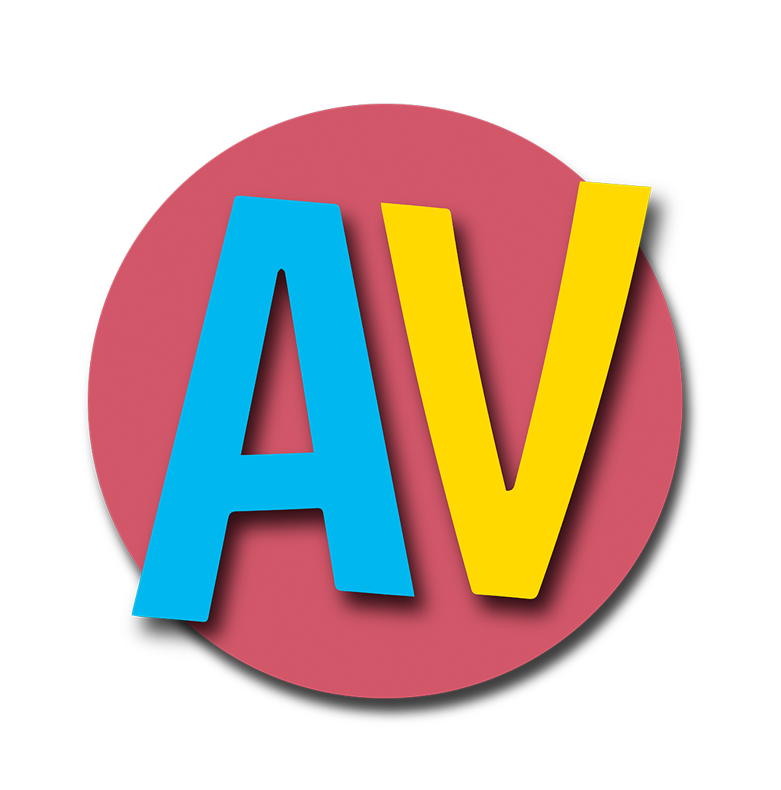

<ion-view view-title="Agenvida"  hide-nav-bar="true" has-navbar="true" >


<ion-side-menus enable-menu-with-back-views="true">

      <!-- ++++++++++++++++ Center content  ++++++++++++++++  -->
                    <ion-side-menu-content scroll="false">

                   


                  <!--    <ion-header-bar class="bar-positive">

                        <button class="icon-right button button-icon" ng-click="toggleLeft()">
                          <i class="icon ion-navicon"></i>
                        </button>

                        <h1 class="title">

                          Agenvida

                        </h1>


            

                        <div class="buttons">

                          <ionic-datepicker input-obj="datepickerObject">
                              <button class="button button-icon icon-right" side="right" >
                          <i class="icon ion-calendar"></i>
                        </button>
                        </ionic-datepicker> 
                        


                          <button class="button button-icon icon-right" side="right" ng-click="verPerfil()">
                          <i class="icon ion-android-person"></i>
                        </button>


                        </div>
                    
                                  


                      </ion-header-bar> -->
                     


                      <ion-nav-view name="MainContent" animation="slide-left-right"></ion-nav-view>


                    </ion-side-menu-content>


                <!-- ++++++++++++++++ Left menu ++++++++++++++++ -->

       
                <ion-side-menu side="left" >


                 

                  <ion-header-bar class="expanded bar  bar-header disable-user-behavior">
                      
                      <div class="menu-bottom">
                         AGENVIDA 
                      </div>
                  </ion-header-bar>


                  <ion-content class="positive-100-bg has-expanded-header scroll-content ionic-scroll  has-header">
                    <ion-list>

                       <ion-item ng-click="verMarcacion()"  class="item-icon-left ink" menu-close>

                       <i class="icon ion-checkmark"></i>   {{"purposes" | translate  | capitalize }}
                     
                      </ion-item>


                      <ion-item ng-click="verReporte()" class="item-icon-left ink" menu-close>

                      <i class="icon  ion-calendar"></i>     {{"monthly_report" | translate  | capitalize }} <!--<span class="item-note balanced">Nuevo</span> -->
                     
                      </ion-item>

                       <ion-item ng-click="verEvangelio()" class="item-icon-left ink" menu-close>

                       <i class="icon ion-ios-book"></i>   {{"lecture_day" | translate  | capitalize }} 
                     
                      </ion-item>

                       <ion-item ng-click="verTelefono()"  class="item-icon-left ink" menu-close>

                  <i class="icon ion-android-call"></i>   {{"father_telephone" | translate | capitalize }} 
                     
                      </ion-item>
                       <ion-item ng-click="verOraciones()" class="item-icon-left ink" menu-close>

                      <i class="icon icon-praying-hands"></i> {{"prayers" | translate | capitalize }}
                     
                      </ion-item>

                      <!-- <ion-item>

                     Capitalario <span class="item-note">Pronto</span>
                     
                      </ion-item> 
                       <ion-item ng-click="verSugerencias()" menu-close>

                      Sugerencias
                     
                      </ion-item>-->
                    </ion-list>
                  </ion-content>


                </ion-side-menu>

               
</ion-view>

      
  
